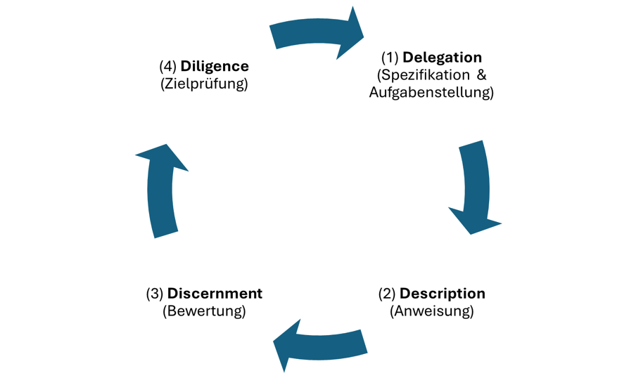
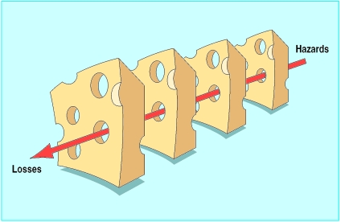

Workshop 2 — Discern in vier Ebenen
Freitag, 25.09.2026 · 09:00–13:00 · Campus Südstadt
Lernziele
Was Sie nach diesem Workshop können
- Delegate — entscheiden, welche Prüfung Sie einem Skript, welche einem Modell und welche nur sich selbst überlassen.
- Describe — einen Suchprompt so bauen, dass seine Antworten prüfbar werden: Quellenbindung, Zitat-IDs, festes Format.
- Discern — einen GenAI-Output auf vier Ebenen testen (Prompt-Patterns, Prüfskript, LLM-Juror, Goldstandard) und sagen, welchen Fehler jede Ebene findet und welchen nicht.
- Diligence — für einen durchgerutschten Fehler die Verantwortung zuordnen und eine eigene Wenn-Dann-Schutzregel daraus ableiten.
Vorbereitung
- Zugang zu einem RAG-System mit Datei-Upload prüfen (GWDG Academic Cloud RAG/Arcana, NotebookLM, ChatGPT oder Claude mit Upload) — siehe Quickstart.
- Den HGB-Auszug (§§ 264, 264d, 267, 267a, 316) herunterladen; er wird in Übung 8 in das RAG-System hochgeladen.
- Zwei eigene Dokumente als PDF bereitlegen: die Prüfungsordnung (Übung 5) und das Modulhandbuch oder ein anderes Dokument aus dem Studienalltag (Übung 4, Recap Describe).
- Zugang zur DigiBib mit der TH-Kennung testen (Fachgebiet Wirtschaft → Business Source Premier) und ein Werkzeug mit Deep-Research-Modus bereithalten (ChatGPT, Gemini oder Perplexity) — beides für Übung 1 und 2.
- Optional: die Wissensbasis zu RAG, RAGAS, Goldstandard und Prompt-Patterns überfliegen.
Inhalte des Workshops
🟦 Block 0 — Recap: Wo stehen wir im 4D-Kreis? · 15 Min
Der rote Faden beider Tage ist das AI-Fluency-Framework nach Dakan & Feller (2025) mit seinen vier Kompetenzen. Tag 1 hat Delegate und Describe behandelt und mit der Test-Suite einen ersten Schritt in Discern gemacht. Heute steht Discern im Mittelpunkt — die verschiedenen Möglichkeiten, die Qualität eines GenAI-Outputs zu testen — und am Ende schließt Diligence den Kreis: Wer trägt die Verantwortung für das, was keine Prüfung gefunden hat?

Was ist aus Workshop 1 hängen geblieben? Zwei Einstiege im Browser — ohne Konto, ohne Installation.
Begriffs-Memory (5 Min, Einzel oder zu zweit). Begriffe aus Workshop 1 ihren Definitionen zuordnen: fünf Paare pro Runde, zwei Minuten Zeit, sechs Runden von LLM und Token bis Faithfulness und Diligence. Runde 1 enthält die Grundbegriffe, danach wird gemischt. Wer nach zwei Runden aufhört, hat den Kern; wer alle sechs spielt, hat das Vokabular des Tages. In neuem Tab öffnen: Begriffs-Memory — LLM-Grundbegriffe (am besten am Computer spielen).
Recap-Quiz (6 Min, Plenum). Zwölf Multiple-Choice-Fragen zu den Kernpunkten von gestern — Process vs. Cognitive Automation, die vier D, die drei Konfigurationen, Harness und Jagged Frontier, RTF und CREATE, RAG, Faithfulness, Red-Green-TDD und als Brückenfrage die Haftung. Am Beamer zeigen, per Handzeichen abstimmen, auflösen; jede Auflösung nennt die Fundstelle im Skript. Zum Selbstdurchlauf: Recap-Quiz — Workshop 1.
Einstieg in die Qualitätsprüfung von “Discern”: Welche Themen bei Ihrem gestrigen Tutor-Bot müssten auf jeden Fall geprüft werden?
➡️ Übung 1 — Benchmarking per Deep Research · 6 Min · Delegate · Discern ➡️ Übung 2 — Suchstrategie-1-Pager für Business Source Premier · 9 Min · Describe · Discern ➡️ Übung 3 — Prozessmodellierung mit Mermaid (Recap Delegate) · 18 Min · Delegate ➡️ Übung 4 — Prompt-Patterns am Studienalltag (Recap Describe) · 12 Min · Describe
🟦 Block 1 — Qualitätssicherung von GenAI-Outputs in vier Ebenen · 20 Min
Qualitätssicherung von GenAI-Outputs folgt dem Prinzip Defense in Depth — keine einzelne Maßnahme genügt, die Schichten fangen jeweils andere Fehlerklassen ab (Reason, 2000). Vier Ebenen greifen ineinander; die Abbildung fasst die Ebenen 3 und 4 als „Testmanagement” zusammen, die Übungen trennen sie, weil sie verschiedene Fehler finden.

{fig-align=“center” width=“70%” fig-alt=“Vier hintereinander stehende Käsescheiben mit Löchern; ein roter Pfeil von „Hazards” rechts oben zu „Losses” links unten trifft in jeder Scheibe genau ein Loch und kommt so durch alle Schichten”}Im 4D-Framework heißt diese Kompetenz Discern, und sie hat drei Facetten (Dakan & Feller, 2025). Product Discernment fragt, ob der einzelne Output stimmt — das prüfen die Ebenen 1 und 2. Process Discernment fragt, wie das Modell zu seiner Antwort gekommen ist — die Fact Check List in Ebene 1 und der Juror in Ebene 3 legen das offen. Performance Discernment fragt, wie verlässlich das System über viele Anfragen arbeitet — die Domäne von RAGAS und Goldstandard. Der Workshop geht die vier Ebenen von innen nach außen durch, vom einzelnen Prompt bis zum Test des ganzen Systems.

Ebene 1 — Prompt-Engineering diszipliniert das Modell innerhalb seiner Antwort. Konkret nach White et al. (2023) sechs Patterns aus dem Prompt-Pattern-Katalog: Context Manager begrenzt den Antwortraum auf den zentralen Textinhalt (RAG) und verbietet Rückgriff auf Trainingswissen. Persona weist dem Modell die Rolle eines wortgetreuen Textanalysten ohne Entscheidungskompetenz zu. Template erzwingt eine feste Ausgabestruktur (Sachverhalt → einschlägige Stellen → Auslegungsoptionen → Grenzen → Fact Check → Selbstprüfung). Fact Check List zwingt das Modell, am Ende offenzulegen, welche Aussagen Folgerungen sind und gegengeprüft werden müssen. Reflection instruiert zur Selbstprüfung vor Abgabe. Alternative Approaches verlangt mehrere Auslegungsoptionen statt einer Entscheidung. Diese Schicht senkt Halluzinationen, kontrolliert aber nicht den Wortlaut der zitierten Stellen.
Ebene 2 — Deterministische Prüfung nimmt dem Modell den Stift aus der Hand. Deterministic Quoting nach Yeung (2024) trennt die Aufgabe „richtige Stelle auswählen” (Sprachmodell) von „Wortlaut wiedergeben” (deterministisches Skript). Das Modell markiert Zitate mit kanonischen IDs (z. B. HGB-§267-Abs1-Satz1); ein nachgeschaltetes Skript schlägt den echten Wortlaut im Index nach und überschreibt den vom Modell gelieferten Text. Existiert die ID nicht im Index, ist sie halluziniert. Yeung berichtet für den so geprüften Bereich zero false positives.
Ebene 3 — Automatische Prüfung misst die statistische Qualität des Systems über viele Antworten. Ein einfaches und weitgehend automatisiertes Werkzeug dafür: RAGAS (Es et al., 2024) mit vier Kernmetriken — Faithfulness (passt die Antwort zu den Quellen?), Answer Relevance (beantwortet sie die Frage?), Context Precision (sind die relevanten Chunks weit oben?), Context Recall (wurden alle relevanten Chunks gefunden?). Wichtige Warnung: die Faithfulness-Bewertung selbst wird von einem Sprachmodell vorgenommen, und Sprachmodelle erkennen Fehler in Modellantworten nur mit niedrigem Recall — sie übersehen einen erheblichen Teil und bleiben deutlich hinter menschlichen Prüfern zurück (Kamoi et al., 2024). RAGAS taugt für Grobeinschätzung der Qualität und relative Bewertung (wird mein System schlechter, wenn ich das Modell oder den Prompt ändere?), nicht für absolute Zertifizierung. Diese Ebene sieht, ob eine Antwort zum Kontext passt — nicht, ob sie zur Frage passt.
Ebene 4 — Goldstandard schließt genau diese Lücke. Ein manuell kuratierter Goldstandard ist eine Sammlung typischer Berufsfragen mit expertengeprüften Soll-Fundstellen und Soll-Antworten, gegen die das System regelmäßig läuft. Nur er findet den Fehler „richtiges Zitat, falsche Norm” — ein Zitat, das wörtlich stimmt und im Kontext steht, aber nicht die Stelle ist, die die Frage verlangt. Der Goldstandard ist die einzige Stelle, an der menschliche Fachurteile in den Prüfkreislauf eintreten, und er braucht deshalb selbst eine Qualitätsregel: Was zählt als korrekt, und wer entscheidet bei Dissens?

Exkurs — Skills: Ebene 2 als wiederverwendbares Paket. Ein Skill ist ein Ordner mit einer Anleitung (SKILL.md) und, wo nötig, Skripten und Referenzmaterial, den ein Modell bei Bedarf lädt — wie eine Arbeitsanweisung im Kanzlei-Handbuch, die eine Mitarbeiterin erst aufschlägt, wenn der passende Fall auf dem Tisch liegt (Zhang et al., 2025). Das Modell sieht zunächst nur Name und Kurzbeschreibung aller verfügbaren Skills; die vollständige Anleitung und die Skripte kommen erst in den Kontext, wenn die Aufgabe dazu passt (progressive disclosure). Ein Beispiel aus dem Finanzbereich: der Skill Analyzing Financial Statements berechnet aus Bilanz- und GuV-Daten Kennzahlen zu Rentabilität, Liquidität, Verschuldung, Effizienz und Bewertung. Entscheidend ist die Arbeitsteilung darin: Das Modell liest die Daten ein, wählt die passenden Kennzahlen aus und ordnet die Ergebnisse ein — die Zahlen selbst rechnet ein Python-Skript (calculate_ratios.py), nicht das Modell. Das ist Ebene 2 in Reinform: Wo ein deterministisches Skript rechnet, gibt es keine „plausible, aber falsche” Kennzahl aus dem Sprachmodell mehr; was bleibt, ist prüfbar — stimmen die Eingabedaten, und steht im Skript die richtige Formel? Was Deterministic Quoting für den Wortlaut leistet, leistet der Skill für die Arithmetik. Für die Interpretation der Kennzahlen (interpret_ratios.py liefert Lesehilfen und Branchenvergleiche) gelten dagegen wieder Ebene 1 und Ebene 4: Das Urteil bleibt beim Menschen. Verzeichnisse, in denen Sie fertige Skills finden und im Klartext lesen können: das offizielle Repository anthropics/skills mit Spezifikation und Vorlage, das Verzeichnis skills.sh und die kuratierte Sammlung awesome-agent-skills. Lesen Sie die nächste SKILL.md mit einer Frage: Welche Schritte erledigt ein Skript, welche das Modell — und wer prüft die Grenze dazwischen?
Vertiefung in der Wissensbasis · Primer Qualitätsprüfung und Primer Goldstandard. Pattern-Details unter Prompt-Pattern-Katalog.
➡️ Übung 5 — Prüfungsordnung mit zweistufigem Dialog-Prompt · 30 Min ➡️ Übung 6 — RAGAS-Metriken mit Tutor-Bot verstehen · 15 Min ➡️ Übung 7 — Tutor-Bot systematisch prüfen · 22 Min ➡️ Übung 8 — RAG-Suchübung HGB-Prüfungspflicht · 30 Min (Kurzvariante; lang: 45 Min)
🟧 Block 2 — Diligence: Verantwortung für den durchgerutschten Fehler · 15 Min
Die HGB-Suchübung endet mit einer Fundstelle, die das Modell vermutlich übersehen hat — und womöglich mit einer, die wörtlich stimmt und trotzdem nicht die Stelle ist, die die Frage verlangt. Dass so etwas überhaupt jemand findet, hängt an einem Menschen, der die Antwort gegen einen Goldstandard hält — und daran, wer sich für sie verantwortlich fühlt. Genau das ist Diligence, die vierte Kompetenz des 4D-Frameworks: Die Output-Prüfung am Tisch wird im Berufsalltag zur dokumentierten Verantwortung.

Drei Säulen (Dakan & Feller, 2025):
Creation Diligence — verantwortlicher Umgang während der Erzeugung. Verantwortungsvoller Umgang mit KI-Tools unter Einhaltung ethischer und rechtlicher Best Practices; Bewusstsein für Verzerrungen, Mängel, Auswirkungen auf Interessengruppen; Fähigkeit, Verzerrungen und ethische Risiken in KI-generierten Inhalten zu erkennen und zu mindern. Ziel: Gewährleistung eines verantwortungsvollen und sozialbewussten Einsatzes von KI.
Transparency Diligence — Offenlegung gegenüber Stakeholdern. Transparenz und Verantwortlichkeit bei der Verbreitung des Endprodukts; Verständnis für die Erwartungen und Normen des Publikums, der Branche und der Rechtsordnung; Fähigkeit, die Art der KI-Beteiligung klar zu kommunizieren. Ziel: Wahrung von Vertrauen und Integrität. EU AI Act Art. 50 setzt seit 2025 explizite Transparenzpflichten für generative Outputs.
Deployment Diligence — Verantwortung für Verifikation und Veröffentlichung. Verantwortung für die Verifikation von KI-Outputs übernehmen, einschließlich gründlicher Faktenprüfung; angemessene Sicherheitsprüfungen vor der Freigabe; Risiken und Auswirkungen veröffentlichter KI-Inhalte verstehen und verantworten. Ziel: Sicherstellung von Qualität, Sicherheit und Verlässlichkeit. Im Berufsstand übersetzt: Wer haftet, wenn der KI-Output Schaden anrichtet? Antwort: immer Sie als Berufsträger:in, nie der Anbieter.
Berufsrechtlicher Rahmen für Tax/Audit/Advisory:
- WPO § 43 — Berufsgrundsätze für Wirtschaftsprüfer: Eigenverantwortlichkeit, Gewissenhaftigkeit, Verschwiegenheit, Unabhängigkeit.
- StBerG § 57 — gleichgelagerte Pflichten für Steuerberater. Verschwiegenheit ist eine Berufspflicht, kein Vertragsthema; ihre Verletzung ist Straftat nach § 203 StGB.
- DSGVO Art. 5 — Datenschutz-Grundsätze, insbesondere Zweckbindung und Datenminimierung. Free-Tier-Anbieter trainieren in der Regel auf Eingaben — damit ist Mandantenbezug ausgeschlossen.
➡️ Übung 9 — Diligence-Risiko-Recherche im Best-of-N · 22 Min (15 Min Übung + 4 Min TPS + 3 Min Plenum) ➡️ Abschluss — Regelwand · 5 Min Plenum, Socrative
Diskussionsfragen
- Welche der vier Prüfebenen ist in Ihrem Berufsfeld am ehesten praktisch umsetzbar — Prompt-Engineering, Deterministic Quoting, RAGAS oder ein Goldstandard? Und welche wäre die erste, die Sie morgen aufbauen würden?
- Ein Zitat ist wörtlich korrekt, vom Skript verifiziert und vom Juror gestützt — und trotzdem die falsche Stelle. Wer im Team merkt das, und wann?
- Welche Diligence-Pflicht aus WPO § 43, StBerG § 57 oder DSGVO Art. 5 wird in Ihrer typischen KI-Nutzung am ehesten verletzt — und an welcher Stelle des Workflows?
- Wie würden Sie Transparency Diligence in der Mandantenkommunikation dokumentieren, ohne den Mandanten zu verunsichern?
Aufgaben
Recherche zum Einstieg (Block 0, 15 Min): Übung 1 — Benchmarking per Deep Research Übung 2 — Suchstrategie-1-Pager für Business Source Premier
Recaps zu Tag 1 (in Block 0): Übung 3 — Prozessmodellierung mit Mermaid (Recap Delegate) Übung 4 — Prompt-Patterns am Studienalltag (Recap Describe)
Discern (nach Block 1): Übung 5 — Prüfungsordnung mit zweistufigem Dialog-Prompt Übung 6 — RAGAS-Metriken mit Tutor-Bot verstehen Übung 7 — Tutor-Bot systematisch prüfen Übung 8 — RAG-Suchübung HGB-Prüfungspflicht
Diligence (nach Block 2): Übung 9 — Diligence-Risiko-Recherche im Best-of-N Abschluss — Regelwand · optional für schnelle Teams: Übung 10 — Integrierter 4D-Use-Case
Hausaufgabe bis zur In-Company-Session: BPMN-Modellierung in Signavio Deep-Research-Bericht gegen die Evidenz halten
Zwei Recherche-Übungen eröffnen den Tag an seiner Leitfrage — wie Arbeitsprozesse in Tax, Audit & Advisory automatisiert und mit generativer KI unterstützt werden und was die Forschung dazu belegt: Übung 1 delegiert das Praxis-Benchmarking an einen Deep-Research-Lauf und legt vorab den Prüfmaßstab fest, Übung 2 baut dieselbe Frage als dokumentierte Suchstrategie in Business Source Premier mit Peer-Review-Limiter und VHB-Journalfilter. Die Recaps holen Delegate und Describe von gestern in zwei kurzen Übungen zurück: ein Prozessdiagramm mit P/C/H/M-Markierung und ein Alltagsprompt, umgebaut mit den Patterns nach White et al. (2023) — denselben sechs, die Block 1 als Ebene 1 der Qualitätsprüfung einführt. Übung 5 wendet die Patterns an der eigenen Prüfungsordnung an und prüft den Output gegen ein Protokoll; Übung 6 erklärt die RAGAS-Metriken sokratisch; Übung 7 zieht die Test-Suite von gestern am eigenen Tutor-Bot durch; Übung 8 hegt ein RAG-System im HGB auf die Rolle der reinen Suchhilfe ein. Übung 9 generiert aus einer Diligence-Definition Risikofälle im Best-of-N und leitet eine Wenn-Dann-Schutzregel ab — der Übergang von Discern zu Diligence; die Regeln aller Paare landen zum Abschluss in einer Socrative-Regelwand und werden in die In-Company-Session mitgenommen.
Hintergrund / Werkzeuge / Ressourcen
- Wissensbasis — Prompt-Pattern-Katalog nach White · RAG-Grundlagen · Primer Qualitätsprüfung · Primer Goldstandard · Recht und Berufsstand.
- Material und Werkzeuge der Übungen — HGB-Auszug (§§ 264, 264d, 267, 267a, 316) · Mermaid Live Editor · Signavio Academic Edition / bpmn.io · Mermaid-Prozessdiagramme mit KI · BPMN-Grundlagen.
- Skills — Agent-Skills-Spezifikation und Beispiele (anthropics/skills) · skills.sh — Verzeichnis · awesome-agent-skills — kuratierte Sammlung · Beispiel Analyzing Financial Statements (Kennzahlen per Python-Skript — Ebene 2) · Hintergrund: Zhang et al. (2025).
- Originalmaterial — Cheat Sheet und Practical Overview zu Diligence aus Dakan & Feller (2025).
Weiterführend
- White et al. (2023) — A Prompt Pattern Catalog to Enhance Prompt Engineering with ChatGPT (Originalpaper zu den 16 Patterns).
- Yeung (2024) — Deterministic Quoting als praktisches Verfahren gegen Zitat-Halluzinationen.
- Es et al. (2024) — RAGAS: Automated Evaluation of Retrieval Augmented Generation.
- Magesh et al. (2025) — empirische Studie zu Halluzinationsraten in juristischen RAG-Systemen.
- Rajpurkar et al. (2018) — Know What You Don’t Know — das SQuAD-2.0-Prinzip unbeantwortbarer Fragen, nach dem Item 8 des Goldstandards gebaut ist.
Tutor
Tutor — KI in Tax, Audit & Advisory →
Vorschlag-Prompt für diesen Workshop:
Ich arbeite in Workshop 2 am Block Qualitätssicherung von GenAI-Outputs. Erklären Sie mir am Beispiel eines HGB-RAG-Systems, wie die vier Ebenen (Prompt-Engineering nach White, Deterministic Quoting nach Yeung, automatische Prüfung mit RAGAS, manuell kuratierter Goldstandard) ineinandergreifen — und welchen Fehler jede Ebene findet, den die anderen nicht sehen. Welche Ebene würden Sie zuerst aufbauen, wenn ich morgen anfangen müsste — und warum?